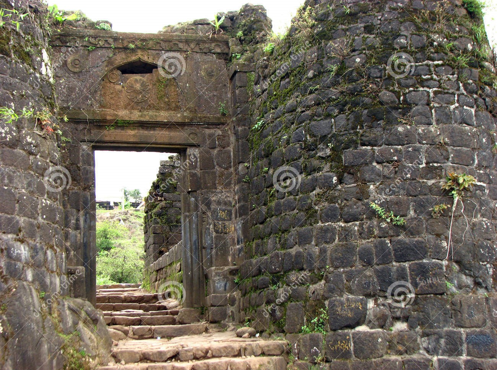
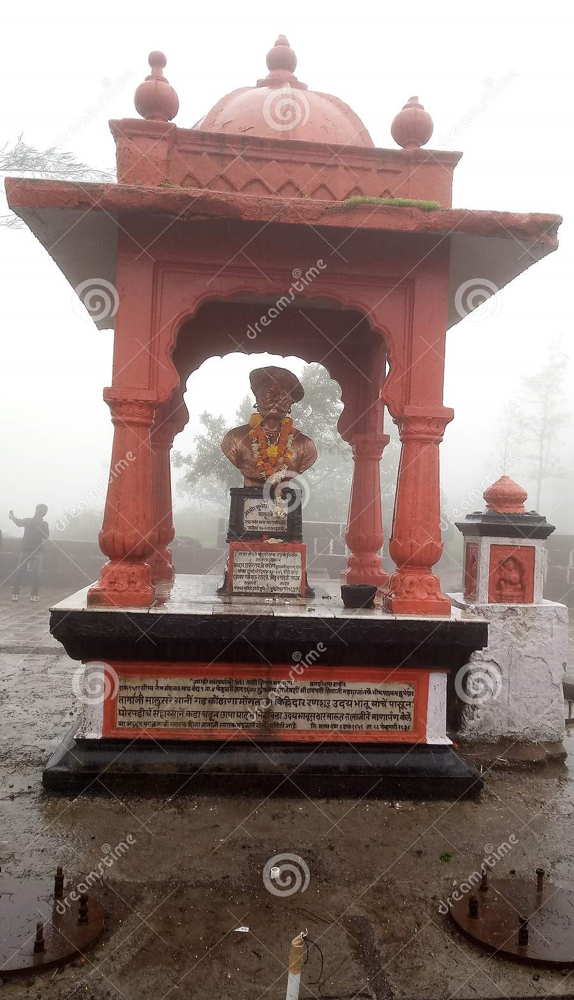
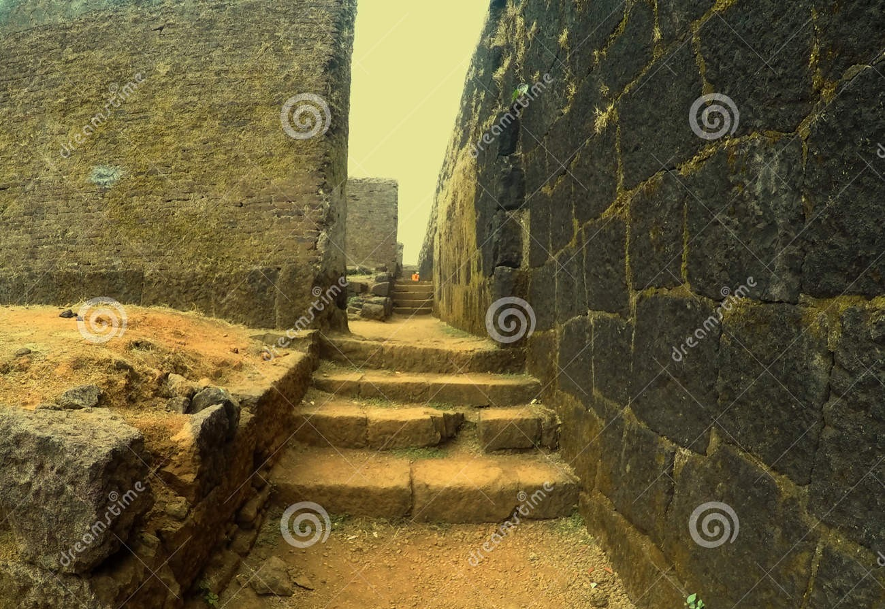

Best 5 Forts to visit in Maharashtra
Table of Contents:
1.1 List of best 5 forts in Maharashtra
Sinhgad Fort
Raigad Fort
Rajgad Fort
Rajmachi Fort
Harihar Fort
1.2 Information about each fort
Sinhagad Fort
Known to be the pride of the southwestern region of Pune, Sinhagad Fort is the first entrée to the list of forts in Maharashtra. During the ancient battles, the Sinhagad Fort served as one of the supports to Maharashtra, amongst which, the Battle of Sinhagad in 1671 is one of the most significant ones. Elevated at 1312 metres above sea level, the Bhuleshwar range of the Sahyadris houses this historical monument. With breakneck slopes that protect the fort from all the sides, there are two entrances to enter the fort one is located in the north-east region and named as Pune Darwaza and the second one is located in the southeastern part and is known as the Kalyan Darwaza.
Visitors can experience the authenticity and regal quotient of the Sinhagad fort that is almost around 1000 years old. This famous fort in Maharashtra houses a Kaundinya Eshwar Temple and the intricate carvings on the walls of the temple make the fine craftsmanship evident. The Sinhagad Fort offers a breathtakingly spectacular view of the Khadakwasla Dam on one side and Torna Fort on the other.
Raigad Fort
Raigad is a hill fort situated in Mahad, Raigad district of Maharashtra, India. It is one of the strongest fortresses on the Deccan Plateau. Many constructions and structures on Raigad were built by Shivaji Maharaj and Chief Engineer was Hirojee Indulkar. When Shivaji made it his capital in 1674 upon being crowned the king of the Maratha kingdom, which later developed into the Maratha Empire, eventually covering much of western and central India.
The fort rises 820 metres (2,700 ft) above sea level in the Sahyadri mountain range. There are approximately 1,737 steps leading to the fort. The Raigad Ropeway, an aerial tramway, reaches 400 meters in height and 750 meters in length, and allows visitors to reach the fort from the ground in only four minutes.
Rajgad Fort
Located yet again in Pune, the Rajgad Fort was previously known as Murudev. This fort was the capital of the Maratha Empire for 26 years when Chhatrapati Shivaji Maharaj was ruling the empire. What is more interesting about the Rajgad Fort is that the fort was constructed from the treasures of the Torna Fort. Perched at a height of 1,376 metres above the sea level, this is one of the highest forts in Maharashtra, and the ruins of this fort consist of caves, palaces, and water cisterns, to name some. The Rajgad Fort is constructed on a hill named Mumbadevi Dongar, which means the mountain of the Goddess Murumba.
The fort takes pride in standing at such a scenic location and is said that Chhatrapati Shivaji Maharaj was hosted here for the highest numbers of days. The history attached to this fort is both interesting and disheartening. Interesting because, the birth of Rajaram Chhatrapati, the son of his Chhatrapati Shivaji Maharaj was witnessed here, and disheartening because, the fort is the deathbed of Chhatrapati Shivaji Maharaj’s queen, Saibai. Amongst all the forts in Maharashtra, the Rajgad Fort is quite a famous monsoon trekking destination and trekkers, as well as other visitors, prefer to spend the night in the fort itself as it is huge and cannot be explored in just a few hours. There is a temple at the top of the fort that is known as the Temple of Padmavati, which serves as the lodging place for the trekkers.
Rajmachi Fort
Rajmachi Fort (Killa) is one of the many historical forts in the rugged hills of Sahyadri mountains (Western Ghats). It consists of two twin fortresses Shriwardhan and Manaranjan, with a wide machi (plateau) surrounding the two Balekillas. Udhewadi is a small village of about 60 households (as per 2011 census report) situated on the machi, at the southern foot of Manaranjan Balekilla of Rajmachi Fort. The fort played a strategic role in the First Anglo-Maratha War. Rajmachi Fort has been declared as a protected monument.
Harihar Fort
Harihar fort is located in the Nashik district of Maharashtra. It lies at an altitude of 3,676 ft from sea level. The hill on which the fort is built looks like a rectangular shape from the base village. But it is built on the triangular prism of rock from the Yadava dynasty. The edges of the Harihar fort are almost vertical. The attraction of Harihar fort is the iconic steps to the top of the fort. It is almost 80 degrees vertically inclined. There are Lord Hanuman, Shiva and Nandi idols and a small pond at the fort. The view from the fort is beautiful. You can see many forts and peaks such as Bhaskargad or Basgad, Anjaneri fort, Brahmagiri and Utwad fort from the top.
1.3 Images of each fort
Sinhagad Fort
 Raigad Fort

Rajgad Fort


Rajmachi Fort


Harihar Fort


1.4 How to reach?
How to reach Sinhagad?
Pune Airport is the nearest airport to the Sinhagad fortress. Once you get down, you can either travel via state-run or private buses or opt for private cab service to drive you to the Sinhagad fortress. Here are some other alternatives before you.
-
By rail: Pune Railway Station is the nearest of all the stations to get to the Sinhagad Fort. From here, you can either opt for a private cab service or choose for local bus transport to take you to the fort.
-
By road: Your journey from Pune to Sinhagad will be for an hour and 15 minutes. You can opt for a private cab service or Uber cab service or Ola to drive you between the two points.
-
By bus: Plenty of bus services are there to drive you between these two points. You need to visit the Pune Bus Stand to find the buses to prefer.
How to reach Raigad?
-
By Train: Vis Dasgaon is the nearest railway station to the fort, which is connected to the major cities of Maharashtra. It is linked with cities like New Delhi, Bangalore, Mysore, Jamnagar, Chennai, etc., in the country.
-
By Road: One of the best ways to reach Raigad is by road. The town is well connected by roads and there are regular buses that operate from major cities to Raigad. The total driving distance from Mumbai to Raigad is around 169 km.
How to reach Rajgad?
Rajgad trek has multiple routes as there are many entrances to this fort. However, 3 trails are very famous and easily accessible. they are:
- Gunjavane village route: via Chor Darwaza
- Pali village route: via Pali Darwaza
- Torna fort to Rajgad (Velhe village): via Alu Darwaza
How to reach Rajmachi?
There are two ways to reach the Rajmachi fort, one is from Lonavala, roughly 15 km flat walk and the other one is from Karjat, a gradual climb of around 5 km. For beginners, it would be better to trek from Lonavala as this is a much easier path. It will take about 5 hours of hiking to reach Udhewadi, the base of Rajmachi fort by this route. Only SUVs can reach Udhewadi village which is situated at the base of Rajmachi Fort to avoid 15 km long trek.
How to reach Harihar?
Nearest Railway Stations:
Nashik Railway Station (56 km),Kasara Railway Station (60 km)
Nearest International and Domestic Airport
Chhatrapati Shivaji Maharaj International Airport, Mumbai (170 km)
The trek to the fort starts from Nirgudpada/Kotamwadi and Harshewadi. Trek route from Harshewadi is easier and short compared to the route from Nirgudpada. If you start the trek from this route, it will take 1:30 hr. to reach the fort. And the second route starts from the village of Nirgudpada or kotamwadi. Trek from this route is a bit difficult and also full of adventure. It will take 2 to 2:30 hr. to reach the fort. You can also start trek from Kotamwadi. You will see the Kotamwadi school. From School take a right turn to start the trek.
1.5 Best time to visit?
Best time to visit to Sinhgad?
The best time to visit Sinhagad Fort is during monsoon or winter season, i.e. in between the months of June and February.
Best time to visit to Raigad?
The ideal time to visit the Raigad fort is during November to March as winters are not harsh here. The weather remains pleasant, and you will enjoy trekking or ropeway the most during winters. Summers are hot in Raigad as the mercury reaches up to 50 degrees Celsius.
Best time to visit to Rajgad?
The best season to visit Rajgad is during the monsoons and the winter season. Although, night trekking in summer is really fun due to cool weather.
Best time to visit to Rajmachi?
The months from June to September is the best time to visit Rajmachi since the monsoon season here greets you with water springs and greenery all over as you keep climbing the fort.
Best time to visit to Harihar?
October to February; June to August for Monsoon Trek